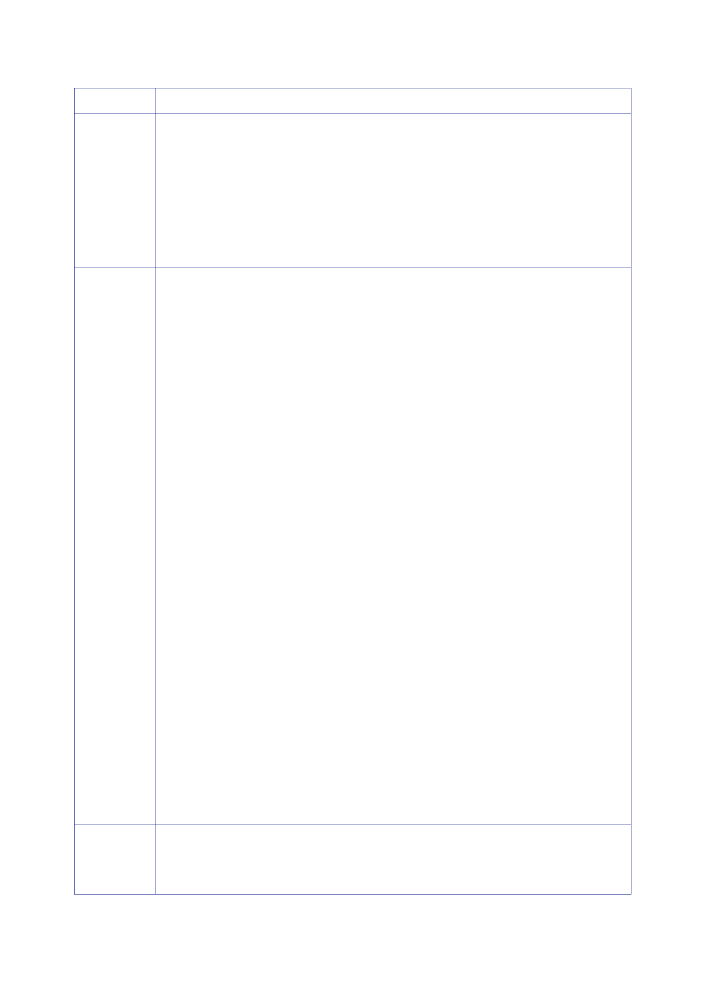

3.5 |
Development of UK strategy and options, September to November 2002
–
the
negotiation of resolution 1441
Country
Ireland
(continued)
Russia
Bulgaria
Extracts
from Explanations of Vote (EOV)
“As far as
Ireland is concerned, it is for the Council to decide on any
ensuing action …
we are
confident that, should it be necessary, the Council will … face its
responsibilities.
“… As the
concept of material breach is a key element of this resolution …
Ireland’s
understanding
of this concept is in accordance with the definition contained in
the
1969 Vienna
Convention on the Law of Treaties: ‘the violation of a provision
essential
to the
accomplishment of the object or purpose of the treaty … We fully
expect this
same
definition to be applied in determining whether any further
material breach has
occurred,
should it become necessary to do so.”
“… our
delegation participated constructively in work on additional
procedures for
inspections
that would ensure there would be no resumption of Iraqi programmes
for
weapons of
mass destruction and at the same time would create the conditions
for a
comprehensive
settlement of the situation around Iraq, including the lifting of
sanctions.
“At all
stages … we were guided by the need to direct the process of a
settlement onto
a
diplomatic and political path and not to allow a military scenario
… the resolution …
contains no
provisions for the automatic use of force. It is important that the
resolution’s
sponsors
today officially confirmed … that that is their understanding and
that they
provided an
assurance that the resolution’s objective is the implementation of
existing
Security
Council decisions concerning Iraq through inspections
…
“… it is of
fundamental importance that the resolution clearly confirms that
all Members
of the
United Nations respect the sovereignty and territorial integrity of
Iraq … It
also
confirms the need for full implementation of resolution 1382
(2001), whereby all
members of
the Security Council undertook to seek a comprehensive settlement
…
which
assumes the lifting of sanctions.
…
“The …
wording is not ideal … but that reflects the very complicated
nature of the
compromise
that was reached. The Russian Federation made a choice … What is
most
important
is that the resolution deflects the direct threat of war and that
it opens the
road
towards further work in the interests of a political diplomatic
settlement.
“It is
particularly important that … in the event of any kind of
disagreement over
disarmament
matters, it is the heads of UNMOVIC and of the IAEA who will report
…
to the
Security Council, and that it is the Council that will consider the
situation …
…
“Implementation
… will require goodwill … the willingness to concentrate on
moving
forward
towards the declared common goals, not yielding to the temptation
of unilateral
interpretation
of the resolution’s provisions and preserving the consensus and
unity of
all members
of the … Council.”
“This
Resolution is not a pretext for automatic recourse to the use of
force …
“My country
welcomes the fact that the resolution categorically reaffirms the
centrality
of the
Security Council in our decision‑making process.”
349